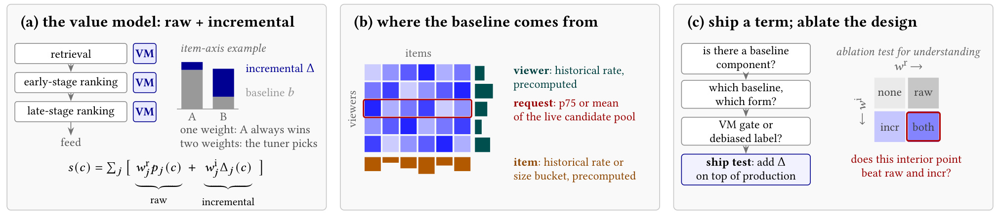
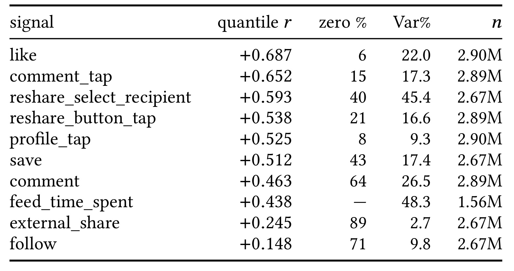
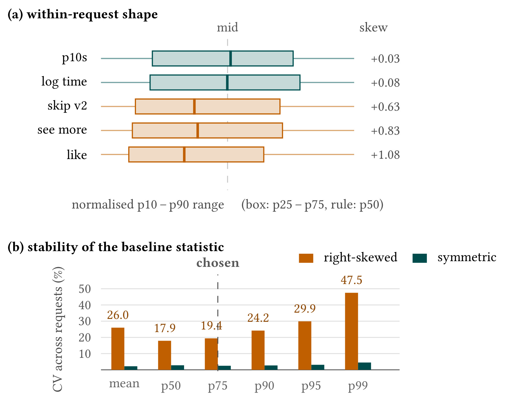
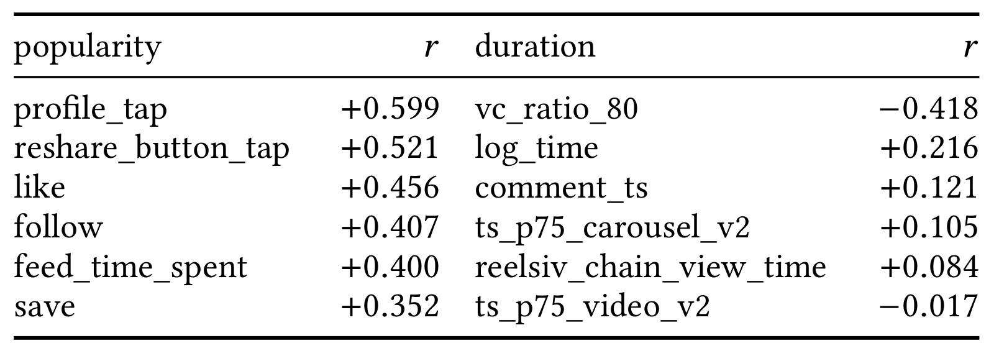
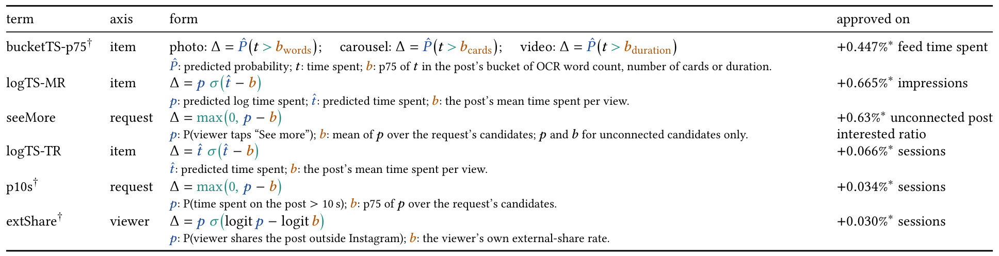
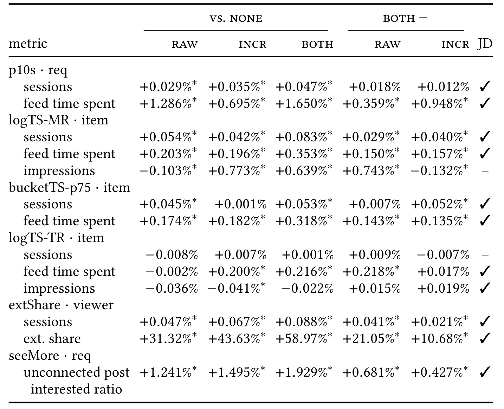
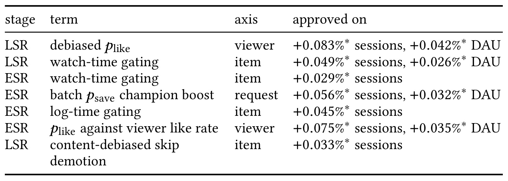

Baseline and Incremental：Instagram Feed 如何保留基线并单独加权增量
Hsin-Chiang Chen、Hao Wang、Gedi Zhou 等 Meta 作者研究大规模信息流的价值模型：不替换预估模型，而把同一行为的原始预估与相对于用户、物品或当前请求基线的增量同时交给调权器。论文首版于 2026 年 10 月 20 日公开，本笔记依据十页原始 PDF（含附录证明），于 2026 年 10 月 22 日核对。论文入口。未核验到独立官方代码或项目入口；线上指标均为作者报告，未独立复现。
信息流的行为预估混合了用户、物品或请求本来就会产生的基线，以及当前候选超出基线的增量。现有去偏方法大多移除基线，但在多信号价值模型中，一个系数无法分别权衡这两个成分，直接去掉基线也会丢失真实价值。
1. 背景和问题
1.1 预估准确不等于信号已经被正确使用
Instagram Feed 同时呈现用户关注账号的内容和非关注推荐内容。召回、早排和后排都需要决定候选的相对顺序，后排每次处理数百个候选。本文关注后排的 MainRank 和 TopRank 两套价值模型，前者排列信息流主体，后者填充一次会话最靠前的位置。底层多任务模型给出点赞、分享等概率，也给出预期停留时间这样的回归结果；价值模型再把这些不同单位、不同频率的预估加权组合。作者明确把实际系统里部分信号组之间的乘法结构放在讨论范围之外，所以文中的线性和是研究对象的近似切面，并非 Feed 全部打分逻辑。
同样是一个较高点赞概率，它可能意味着这个人本来就喜欢频繁点赞，也可能意味着这个候选比他平时看到的内容更值得点赞。两种来源都能提升监督学习的预测精度，但对排序策略未必应拿相同奖励。论文举出用户历史点赞率与点赞预估的分位相关达到约零点六九，说明预估相当程度上追随行为习惯。如果其他信号没有相同习惯强度，直接相加就会让点赞在这个用户的整批候选里得到更大影响；预测无误仍可能造成不同任务间的隐性失衡。这里的问题落在预估之后的效用组合，并不要求先证明底层模型学习失败。
物品侧也有同样分解。一个广受喜爱的帖子具有很高历史互动率，这可能包含曝光反馈形成的流行度，也可能包含真正被多数人喜欢的质量；一个长视频则天然有更多被观看的秒数。把这两者都归为需要删除的偏差，会把热门内容的真实质量和较长内容的真实消费价值一并抹掉。请求侧又增加一层参照：在整体很弱的一批候选里稍好的内容，与在很强的一批里同样得分的内容，其相对突出程度不同。关注内容与非关注内容的比例还会改变本次候选池的强弱，历史用户均值和历史物品均值都不能完整描述这种临时组成。
因此，论文中的“基线”是一个观测参照量：用户自己过去做该行为的频率、物品跨用户的历史行为率，或这次请求的候选分数统计量。所谓“增量”也是相对参照的统计量，不等于推荐行为的因果增益。没有随机曝光的反事实结果，就不能将相对于历史平均的差值解释为“推荐额外造成了多少互动”。这个概念边界很重要，因为线上随机实验验证的是加入某项打分规则之后的策略效果，而不是证明每个候选的增量分数都具有因果含义。
1.2 移除偏差与保留真实行为之间的张力
相关工作主要沿两条路径处理偏差。一条在训练或推理时移除某种背景因素，包括逆倾向加权、去除位置分支、按熟悉度归一化、把原预测换成条件偏差或分位值；另一条在标签侧重新定义观看效果，例如在时长组内衡量长看或相对优势。也有方法保留或重新注入部分流行度、把偏好与从众拆开后相加，或者混合原始与去偏得分。本文不声称首次出现“双分数”，它试图把这些具体模型中的处理抽象为一个价值模型算子，并解释为什么原始项应当作为独立信号留下。
这个解释可以从三个反例理解。习惯点赞的人，即使某次只略高于自己很高的基线，这个赞仍是真实互动；只看相对差会削弱它对其他任务的权重。某个短视频意外被多看了一点，可能比一个刚达到自身时长基线的优质长视频得到更高相对分，但不能据此断言前者总价值更高。一个强候选池和一个弱候选池各自的第一名也可能通过类似的门控比例，如果丢掉绝对预估，就失去判断两批整体质量的通路。原始预估保留绝对水平，增量项允许额外奖励“超出本来水平”，两条路径分别调权，才能表达这些取舍。
论文的工程条件使这种做法特别可试。这里的价值模型是可配置的公式，而非另一个需要训练的大网络。读取已有预估和已有特征，增加一个门控或折线项，能够以配置变更进入线上实验，回滚也很快。用户与物品基线可预计算，请求基线仅对少量候选做一次聚合；因此作者把它与需要新增预测分支的模型去偏方法区分开。这个成本优势有适用条件：若信号还没有合适基线特征，或者标签本身受到高维媒体结构扭曲，就不能假定只写公式便足够。
评价的难点也由此改变。一个新项上线获得收益，只说明把它叠到当时的系统上有用，不能回答原始项是否可以删除，也不能回答新项是否只是多给了同一行为一点权重。作者专门开展四臂实验：两项都无、只有原始项、只有增量项、两项都有。这将“上线一个配置点”与“检验两个通路是否冗余”分开，并把推理重点限制在已有生产工作点附近。对多目标推荐研究而言，这种问题设置比单报一列点击提升更有价值，因为它显式检查了收益的来源与所处背景。
与大模型方向的关系在于多路评分的组织，而非模型架构迁移。语言模型重排也可能把相关性、用户反馈预测、内容质量或时长偏好合成最终价值；这些分数同样可能带有用户行为习惯和候选集合组成。本文给出的候选参照与双通路思想值得作为假设去测，但本文没有语言模型、生成式推荐或大模型离线基准的结果。将其迁移到语言模型系统时，仍需检查分数尺度、概率校准、候选池变化和线上目标，不能把 Instagram 的数字直接当作大模型收益预期。候选池若被其他检索策略改变，请求参照的含义也会随之变化。
2. 方法
2.1 一个算子与三个基线
符号解释：候选为 $c$，行为任务为 $j$，$p_j$ 是该任务的已有预估，$w_j$ 为旧权重，$w_j^{\mathrm r}$ 和 $w_j^{\mathrm i}$ 分别控制原始项及增量项，$s$ 是最终排序分数。两个权重通过线上调优而非本文新增的损失函数学习；把其中一个设零就得到单项端点。原始项负责无条件保留绝对水平，增量项负责相对于参照的非线性奖励，二者并行送入同一个总分。
符号解释：$b$ 为基线，$d$ 为比较尺度，$m$ 为幅值，$k$ 控制门的陡峭度，$h$ 对应原文 shift。基线来源、比较尺度、幅值、陡峭度与居中方式共同确定一个算子实例；本文主要采用加法放置，乘法地门控一组价值项是未系统研究的额外自由度。$h=0$ 产生单侧提升，正幅值下 $h=0.5$ 使基线两侧带正负号，不能把居中与是否保留原始项混为一谈。
符号解释：概率信号使用对数几率差，回归预估 $\hat y$ 使用原单位差，例如秒数差。概率基率很低时，直接相减可能挤在很小范围内，对数几率能把尾部差异展开；实际计算必须将基线夹到合法开区间。提升项可取 $m=p$ 保留强参照类里的绝对质量，或取 $m=e=p-b$ 强调纯相对差。降权若仍取 $m=p$，越接近零的坏候选反而惩罚越小，所以原文使用反向比较与常量负幅值，或负半轴折线；提升和降权并不对称。

Figure 1 的左面板首先给出线上位置：同一种价值组合出现在召回、早排和后排，但本文消融集中于后排。紧接着的两根柱把候选总预测拆成灰色基线与蓝色增量；一根柱总量大而增量小，另一根总量小而增量大。只调原始权重时，对这个信号本身的偏好无法独立转向第二种候选，增加蓝色通路才给调权器提供新的选择。这个示意特别适合物品基线随候选变化的情形；对用户或请求基线，还需要后面说明的非线性，不能照搬图意得出任意减均值都会改变排序。
中面板用用户乘物品的矩阵说明三个参照的输入不同。用户历史率类似一行的长期汇总，物品历史率类似一列的汇总，而红框选中的本次候选集合是临时的一批，只从已有预测中产生均值或分位数。历史平均已预计算，请求统计要在本次服务时生成；它们可以共存，因为分别回答行为习惯、内容普遍受欢迎程度和本次候选组成三个问题。右面板则区分设计与证据：选择基线和算子后，在生产系统上加一个项可以完成上线测试；要证明两通路确实互补，还要另做四臂，把原始和增量分别拿掉。图中红框两项皆有并不是自动最优，它是需要与两个边界点直接比较的内部点。信息流从已有预估到参照、再到增量和总分，不要求训练新增大模型；只有标签分支例外。这一差别决定了配置上线的速度优势，也决定了消融需要控制其他价值项和权重背景。图中的两个权重作用于同一行为预测产生的两条打分通路，而不是把两个新预测网络的输出拼接起来。
2.2 算子的三个性质
符号解释：第一个性质考察共同基率变化。$a$ 是共同平移量，$T_a$ 是对应概率变换，$D$ 是任意满足不变性的比较函数，$f$ 是某个实函数。附录证明用平移把 $b$ 送到二分之一，再把比较量表示成差值的函数。该性质说明差值包含这种不变性允许使用的全部信息，普通概率比并不满足；它不证明某种基线就是正确因果参照，也不保证任何斜率的门在线上都好。
符号解释：第二个性质把门联系到熵正则阈值。$g$ 为零到一的门值，$d$ 为优势，$\tau>0$ 是温度，$D_{\mathrm{KL}}$ 是两个伯努利分布的散度。线性奖励希望按优势打开门，正则阻止过于确定的决策；严格凹性给出唯一最优门，故 $k=1/\tau$。这是一种算子性质的解释，不是实际推荐模型又训练了一次该目标。
符号解释：$e=p-b$ 是原单位差，$W$ 为 Lambert 函数，$\mathrm e$ 是自然常数。固定相同幅值为差值时，门一致趋近折线；附录通过最大化误差得到常数。生产门经常使用预测本身作幅值，所以生产门与生产折线同时改变了幅值和斜率，不能简单说一个是另一个的极限。原文还指出正负门分量之和恒等于完整差值，类似正负半轴折线相加；它把提升和降权放回同一差值分解里。
符号解释：第三个性质比较可达空间。$P$ 和 $Q$ 汇集一组请求里所有候选的原始与增量分数，$\alpha,\beta$ 为实权重，$\mathcal K$ 是每个请求内部恒定的向量空间。请求内加常数不影响排序，所以要在去掉该空间之后比较表达能力。用户和请求基线在请求内恒定，若对全部候选只取 $p-b$，其效果就是改原始权重；非线性门或折线通常才能让新向量跳出旧空间。物品基线可随候选变化，线性差也可能带来新排序。该定理证明可达空间增加的条件，没有证明生产权重优于重新调好的单项权重。
2.3 五步设计流程：从诊断到配置或标签
流程先在用户和物品轴筛信号，计算十等分桶序号之间的 Pearson 相关与可比较时的方差比：
符号解释：$y$ 是标签或预估，$b$ 是同构念、同单位的参照特征。相关描述形状，方差比补充强度；原文强读数门槛为分位相关至少零点五且方差比至少百分之二十，弱读数为相关低于零点二且方差比低于百分之十。跨场景标签、秒数与二值标签不能硬比；物品轴有三项比率超过百分之百，作者视为前提违反，因此不报告该轴方差比。零值占比超过百分之六十的稀疏特征即便相关低，也只能判读数未解析，而非无需去偏。
第二步为历史基线选择窗口、最小曝光保护和夹值。窗口平衡噪声与过时，物品热度还是当前排序器共同造成的先验。第三步只针对请求轴测形状：右偏信号提升优先选约七十五分位的折线，压低底部优先选十或二十五分位的 sigmoid；对称信号的提升可选七十五或九十分位折线，压低也可用折线。第四步区分热度偏差和媒体类型偏差，前者适合价值模型公式，后者标签本身受格式和尺寸影响，转到标签侧学习。
符号解释：$t$ 为真实停留时长，$b_{\mathrm{format,size},75}$ 是同格式尺寸桶的时长七十五分位，预测器给出超过本桶参照的概率。图片按 OCR 字数、轮播按卡片数、视频按时长分桶。训练时新增这个监督目标，服务时增加预测分支；它与读取已有预测直接算门不同。第五步核算成本并上线一个配置点，用户和物品基线为已有预计算特征，请求均值需线性聚合，分位数按原文实现需排序。上线测试保留原始项，不承担四臂机制检验的职责。
3. 实验结果
3.1 离线诊断：强相关与可用基线是两件事
离线分析使用一周候选级排序日志，按块抽百分之一；分位相关在不同轮次大约波动正负零点零一。它关联的是预估与基线特征各自的十分位桶编号，不能用普通连续值 Pearson 替换，因为有些历史率特征甚至携带超过一的非物理取值。原文没有公开可复现日志或开放基准，所以这里的证据是生产诊断案例，不是跨数据集普适比较。

Table 2 每行一个行为，列依次为分位相关、零基线曝光比例、方差比和样本规模。点赞相关为正零点六八七，零值只有百分之六，方差比百分之二十二，是基线成分明显且观测覆盖较好的例子；评论入口点击相关也很强，但方差比百分之十七点三，说明不能只看一列门槛。转发选接收人方差比达到百分之四十五点四，预估跟随习惯的幅度相当可观。停留时间基线是秒数而不是历史行为率，所以零值比例用横线表示，不是数据漏报。各行样本数从一百五十六万到二百九十万不等，不能假定所有行为共用相同有效样本。
最值得警惕的是表末两行。站外分享相关仅正零点二四五，历史特征有百分之八十九为零；关注相关正零点一四八，百分之七十一为零。它们看上去不如点赞“值得去偏”，但大量零值会压低秩相关的可分辨性，基线又会在门计算里被夹值。站外分享后来恰好有显著线上收益，说明低读数不能成为一票否决。这里支持的结论是高召回筛查，而非按相关从大到小分配实验流量；高相关也只证明有基线成分，未证明当前价值模型还有利用它的空间。作者在其他高相关用户信号上没获得稳定收益，将其归因为既有权重饱和，但承认缺少直接因果证据。

Figure 2 上半部分把每个信号自己的十分位到九十分位跨度归一化，盒子是二十五至七十五分位，中间竖线为中位数，因此横向长度不能比较不同任务的原始概率大小。十秒观看概率和对数时长形状近对称，点赞、查看更多则明显右偏；右边偏度从约零点零三到一点零八提供同方向支持。下半部分比较参照统计量跨模拟请求的变异系数：右偏信号均值为百分之二十六，中位数百分之十七点九，七十五分位百分之十九点四，越高的尾部分位越不稳，九十九分位达到百分之四十七点五。选择七十五分位不是因为它绝对最稳，中位数更稳，但中位数坐在被压缩的底部，无法有效区分候选。七十五分位在离开底部与不过度追逐噪声尾端之间折中。
这张图直接对应请求基线的设计规则：右偏信号底部挤在零附近，线性惩罚会把许多低分候选判成差不多，使用对数几率门才能展开；提升折线在基线以下统一为零，反而可以绕开底部挤压问题。对称信号没有这么强的尾部不稳定，参照选择更宽松。图中的模拟只再现所需的稳定性排序，作者特别提示真实请求的不稳定程度最多可大约再放大六十八倍，故这里的柱高不能直接作为线上阈值。应先测本系统候选池，再确定参照，不应把七十五分位当作与流量场景无关的常数处方。

Table 3 左右两半讨论不同偏差，不能把它们的相关数字当作一份统一效果榜。热度一侧，主页点击为正零点五九九，转发按钮为正零点五二一，时长为正零点四；这些都是预估跟随物品历史率的程度。时长一侧，完成比例相关为负零点四一八，说明视频越长越难完成；对数时长为正零点二一六，说明更长内容更容易积累秒数。两种方向都可能是结构性影响，并不是负相关就不存在偏差。视频桶标签与时长的相关约负零点零一七，比原始对数时长更接近零，支持标签干预确实削弱时长联系。
不过最后一项是干预产物，不是一个未经处理就天然没偏差的信号；原文覆盖图同样提醒不要据此把它筛掉。图片和轮播标签分别按字数与卡片数分桶，作者本轮并未审计那两个维度，所以不能把视频这行验证外推为三种媒体都被彻底去偏。还有六个时长相关绝对值低于零点零九的信号没有列出，表格也不是所有价值模型信号的全集。它的作用是解释为什么同在物品轴，流行度可先用得分公式，而媒体结构会进入训练标签；是否值得部署仍由独立线上结果判断。
3.2 上线记录：六个项的目标并不相同

Table 4 给出六项真实配置，读表时应同时看形式和批准上线的指标。三个桶标签合为一个研究项，使用格式尺寸桶内超出七十五分位的概率；MainRank 时长门使用对数时长预估作幅值、秒数差作门输入，而 TopRank 时长门用秒数预估作幅值。二者参照都是物品平均每次观看秒数，但工作价值模型和幅值都不同，不是复制同一项到两个位置的干净对照。查看更多仅针对非关注候选，以本批均值作基线并取正差；十秒观看以本批七十五分位作基线取正差；站外分享则在用户历史率的对数几率差上门控原始概率。这些具体输入解释了为什么统一算子仍需要信号级设计。
批准列不能读成六次独立的会话胜利。TopRank 门曾有显著、复验的会话提升百分之零点零六六；十秒观看和站外分享所在组合的会话数字还涉及打包上线，不能逐项当纯净效应。查看更多以非关注帖子兴趣比提升百分之零点六三获批，同时付出 Feed 时长下降百分之零点一一八的代价。MainRank 门会话持平，却让曝光提升百分之零点六六五、视频观看器以外曝光提升百分之二点二一，推动照片、轮播和短内容的位置重平衡。桶标签所在大改造中，标签自身贡献 Feed 时长提升百分之零点四四七，会话仅百分之零点零零二。作者把这些异质目标公开，是为了让后面的判定指标追随原始用途，避免事后挑最漂亮的格子。
覆盖也是明显约束：不到五分之一的 Feed 信号拥有相匹配的用户历史率，大约六个有物品基线，大约五个有请求级项。大部分信号连合适参照都没有，因此缺乏效果不能自动归因为算子无效，缺乏部署也不能视为已全量验证。效率方面，预计算基线无额外模型推理；均值请求聚合为线性复杂度，分位数为候选量乘其对数。作者报告包括启动延迟在内的额外时延最多几毫秒，但没有逐项延迟表、分位数或硬件配置，不能进一步声称尾延迟零成本。与新标签预测器相比，得分公式更便宜；与完全不做该项相比，它仍有运行及维护成本。
3.3 四臂消融：内部点是否优于两个端点
六个实验按用户随机化，每臂百分之三流量；大多数在独立实验空间，两个共享空间但实验臂不相交。每个实验运行十二至十七天，报告取六个实验都已爬坡的共同七天。无项臂把两个权重都设零，原始臂只开生产原始权重，增量臂只开生产增量权重，双项臂两者全开；所有相对变化统一以无项臂为参照，给出百分之九十五区间。两个单项臂均未重新调权，所以问题是当前生产配置是否使用了额外自由度，而非充分优化的两类模型之间谁更优。

Table 5 前三列分别给原始、增量和双项相对无项的变化，后两列才是双项对两个单项的直接实验对比；不能用前三列相减替代后两列，因为相对比值的分母和估计过程不同。打勾只要求两个直接对比点估计都为正，星号才代表绝对效应超过区间半宽。十三个预先分配的项与指标对里，十一对点估计双胜，其中七对两个直接差都显著；二十六次直接比较有十七次显著为正、一次显著为负。唯一显著负向发生在 MainRank 时长门的曝光指标，不应把“on impressions”的限定误解为二十六次比较全都只统计曝光，也不能把十一对双胜说成十一对显著双胜。
具体看十秒观看，请求增量叠加原始后，Feed 时长相对无项提升百分之一点六五，双项对原始直接提升百分之零点三五九，对增量提升百分之零点九四八，两项都显著；会话两次直接差正向但不显著。MainRank 时长门在会话和 Feed 时长都显著双胜，曝光却比只留增量少百分之零点一三二，原始时长为负曝光、增量为强正曝光，二者代表不同消费结构。TopRank 时长门会话对增量为负百分之零点零零七且不显著，是另一处未双胜；它在 Feed 时长和曝光点估计双胜，但并非所有差都显著。站外分享则四次直接差均显著正向，会话分别正百分之零点零四一和零点零二一，分享行为分别正百分之二十一点零五和十点六八，显示稀疏低相关并不等于线上无用。
查看更多只按非关注帖子兴趣比判定，两次直接提升分别百分之零点六八一和零点四二七，均显著；会话直接差都是负向但不显著，故没有拿来证明会话收益。总体机制指标十六个直接比较有十二个显著为正，会话十个里仅五个显著为正。作者说明会话区间半宽约百分之零点零二，信号很弱时点估计结论与显著性结论必须分别保留。六实验若随意扫全指标会出现二百七十个单元，仅按百分之九十五区间预计就有约十四个偶然显著，预先限定各项用途可减少这种挑选，但不等于做完所有多重比较修正。
生产背景也会随时间变。TopRank 门上线时会话胜利较强，八周后消融窗口会话基本持平，但时长机制仍在。作者将其理解为其他价值项重调后，原来可转化成会话的空间饱和；这是合理解释，不能视为已严格隔离的机制证明。站外分享在共同测量窗口原始臂才是当时生产，增量第二天才上线，亦不可一概说双项臂都是窗口里的生产对照。原文认为持续调权使原始权重已经接近单项可达到的好点，早期也做过匹配的纯权重提升实验，但本轮没有扫全权重面，严格读法仍是局部互补证据。
3.4 跨表面部署与可以外推的范围

Table 6 展示 Reels 的部分上线记录，列出早排或后排、具体项、基线轴以及批准指标。用户侧点赞去偏出现在两个阶段，后排那项报告会话提升百分之零点零八三、日活提升百分之零点零四二；物品侧观看门也分别出现在早排和后排，后排示例为会话正百分之零点零四九、日活正百分之零点零二六。请求轴的收藏突出候选提升用在早排，会话正百分之零点零五六、日活正百分之零点零三二。最后一行是内容去偏的跳过降权，说明不只有奖励项可以使用这套参照思想。所有数字都是每次上线自身读数，不能相加成 Reels 总提升，也不能互相比大小选择最佳轴。
作者明确以这张表证明采用范围，不做重新分析，因此它没有 Feed 四臂的控制强度；没有无项、原始、增量、双项四组，就不能从表中推断其他应用都已证明保留原始项必要。Threads 已上线后排去偏信号，Facebook 仍在测试，也只是部署或进展描述，不能写成各平台都获得已量化、已复验的收益。可迁移的是低成本在价值模型增加参照通路、按用途评估及保留直接消融的方法论。数值效果依赖各自底层预估、参照覆盖、候选组成和调权历史，论文没有为跨平台统一效果给出统计估计。
4. 总结
4.1 我的判断与工程使用方式
本文最值得保留的是将“去偏”从单向删除转为显式效用权衡。原始行为既携带基线也携带真实质量；增加相对参照通路后，策略可以同时关心绝对价值和超出惯常水平的价值。统一算子减少了为用户、物品和请求分别发明公式的沟通成本，而三个数学性质说明了对数几率、门控温度及非线性自由度的来源。四臂又把“新项有用”推进为“现有工作点两项都不是冗余”的更具体结论，这比直接用上线数字论证方法优越更扎实。
工程落地应从一个已有稳定预估且有基线覆盖的信号开始。先查十等分相关、零值占比和单位一致性，再决定历史参照或请求参照；对请求参照记录候选池组成和统计量波动，对概率门记录夹值后有多少曝光进入相同基线。训练端不用为配置门修改原预测目标，标签端干预才需要新增训练和服务分支。评估时把行为机制指标与回访会话放在一起，尤其要追踪曝光与时长间的结构取舍。大模型重排若想借鉴，可将质量分与相对候选质量分并列，先在小规模、可回滚的受控流量中测量，不应预设语言模型产生的分数已经校准到可直接使用对数几率。
4.2 局限与后续跟进
第一，四臂只检查生产权重四个点，单项没有重调，增量权重通常在原始项旁调出，会使只留增量的比较处于不利背景；需要权重扫描才可比较各类模型的最优边界。第二，基线来自历史和既有排序分配，物品热度并非独立处理变量，增量不能解释成候选级因果收益；若需要因果问题，要另做随机曝光或明确识别假设。第三，六项是已部署案例系列，并非随机信号样本，十三个指标对也有事前用途选择，不能由此估计任意新项的成功率。第四，公开材料没有日志、完整权重、实验方差和分群效应，本文无法复现显著性，稀疏新用户和冷物品是否同样受益仍未解。
第五，长期饱和与反馈风险不能被共同七天窗口消除。TopRank 机制仍在而会话收益减弱，已经提醒配置价值取决于周围系统；短期时长或分享提升也未必持续增加长期满意度。第六，成本只给几毫秒量级描述，没有逐项尾延迟与新增标签预测器成本，不能用“没有新模型”替代完整容量评估。以上边界不否定局部线上结果，却会改变复用时的实验优先级和回滚条件。
后续应优先跟踪三件事：其一，在同一信号上扫原始权重和增量权重的二维面，并加入充分调优的单项端点，辨别表达能力与调优预算的贡献；其二，对零值和非零值用户分别报告实验，联动夹值强度，判断站外分享收益多少来自真正参照、多少来自额外非线性加权；其三，固定观察更长时间，记录价值模型重调前后机制指标与会话转化，验证饱和解释。进一步可扩展未覆盖的物品与用户特征，但应保留失败记录；高相关信号没有稳定收益本身就是有用证据，不能只积累成功上线的清单。将实验结论与价值模型版本共同保存，才能在后续重调后重新判断收益是否仍在。